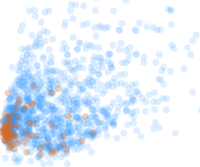

|
 |
A new perspective on risk? Read more about the entropy of prices. Also, following recent research on the speed of financial markets, should the HKEx adopt periodic auctions? |
Other articles:
- Using Kalman filtering as an estimate for fair price, comparing it to the 5 minute moving VWAP
- A look at market liquidity and related topics using data from the HKEx
- Some utilities for execution support
- About me and gbkr.com
gbkr.com is being renovated. Technology has moved a long way since this site was built over 10 years ago and now, with HTML5, much more can be done with much less. You can visit the previous site content through the old home page. Be aware interactive content that relied on Java is unlikely to be working but the tutorials on building trading systems with kdb+/q are still there.